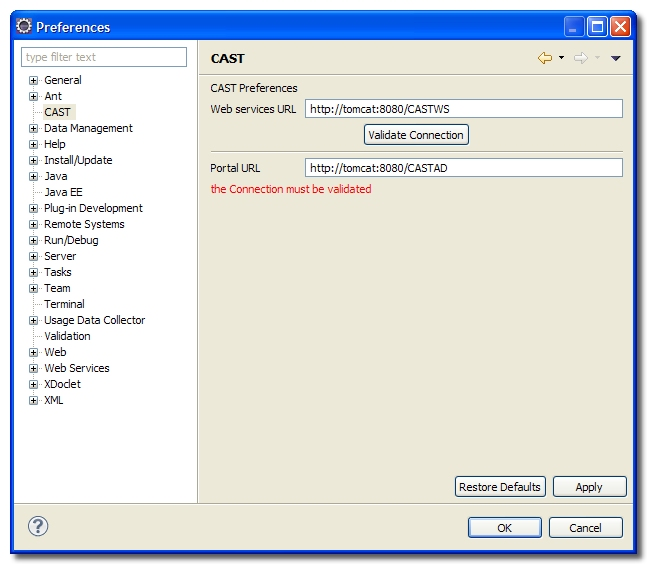
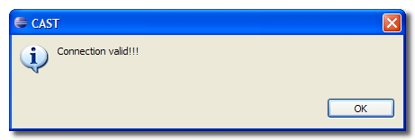
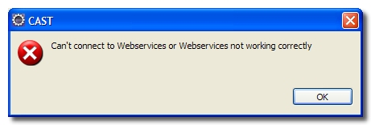

To configure the CAST Plug-in for Eclipse, you need to use the Preferences window in Eclipse, which can be accessed by clicking Window > Preferences and then expanding the CAST node.
When you have successfully entered and validated the connection parameters, click Apply so that the changes take effect. You may also need to restart Eclipse.

The various fields need to be filled in as follows:
| Web Services URL | Please enter the URL of your web services installation (more
about this can be found here). For example:
|
| Validate Connection | Click this button to validate the connection to the web
services installation. If successful the following message will be displayed:  If Eclipse is not able to connect to your web services installation, the following will be displayed:  Notes
|
| Portal URL | Enter the URL of your CAST Dashboard installation. For
example:
|